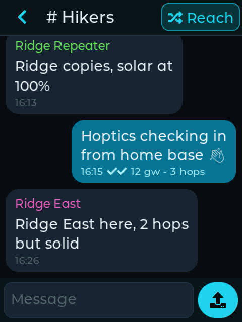
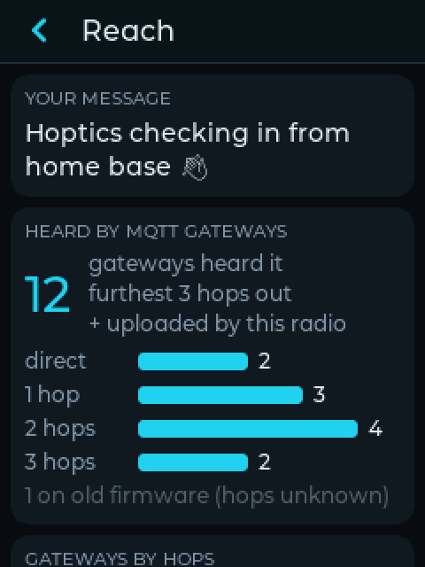
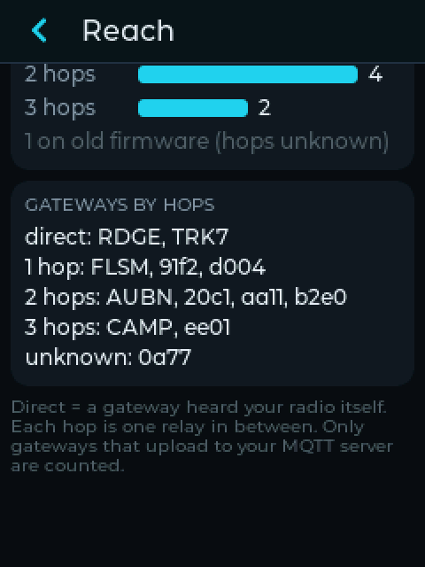
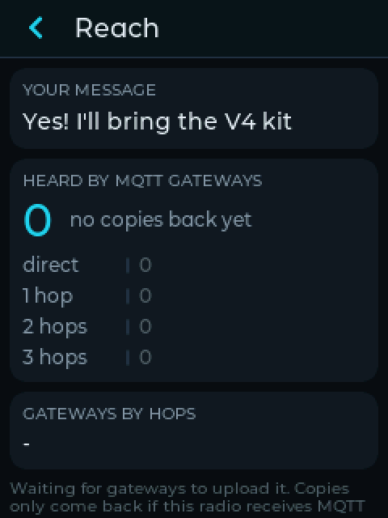
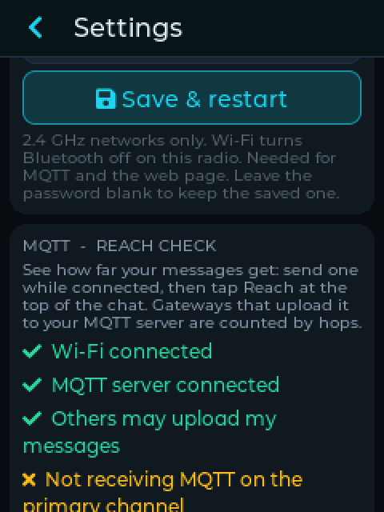
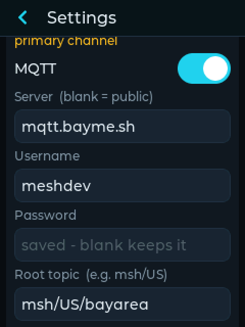
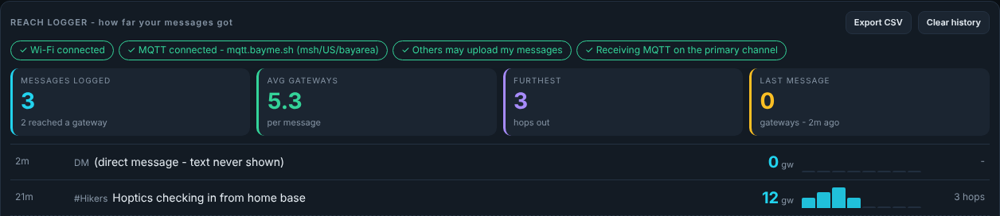

When your radio is on Wi-Fi and receiving your MQTT server's traffic, every gateway that hears one of your
messages and uploads it to the server sends a copy back. Hoptics counts those copies, one per gateway, by how many
hops your message had travelled when that gateway heard it. Send a message, wait a few seconds, and you can
see how well it got into the mesh. (Set-up is on the next page.)

Your message shows its reach; Reach is at the top

The Reach page
CHAT
Right in the conversation
Under your own messages: 12 gw - 3 hops, meaning 12 gateways uploaded it and the furthest was
3 hops out.
Tap Reach at the top of the chat for your latest message, or tap any of your bubbles.
On the T-Deck Plus and ThinkNode M9, move to Reach with the keys or trackball and press
Enter.
REACH
The Reach page
The number of gateways that heard it, how far out the furthest was, and whether this radio
uploaded it too.
A bar for each hop count: direct (a gateway heard your radio itself), 1 hop (one relay in
between), 2 hops…
It updates live while copies are still coming in.

V4-R8, T-Deck Plus, M9: which gateways

Nothing back yet: what to check
BY KIT
Light on the V4, more on the bigger kits
KIT
REMEMBERS
SHOWS
V4 Expansion Kit
your last 6 messages
counts by hop
V4-R8 Kit V2, T-Deck Plus, ThinkNode M9
your last 24 messages
counts by hop and the names of the gateways
Only messages typed on this screen are tracked, and checking costs one comparison per MQTT packet, so the
reach check itself adds almost nothing. What the radio remembers is cleared when it restarts. The web
page keeps a longer history (next page).
Only gateways that upload to your MQTT server are counted. Radios that relay your message
without being MQTT gateways don't show up, so the real reach is usually bigger than the count. Compare messages with
each other, not with the size of the mesh.
Hoptics MT · User guide16
NEW IN 0.2.4
Setting up MQTT on the radio
Everything is in Settings → MQTT - REACH CHECK; no phone app needed. A checklist at the top turns green as
each part starts working.

The checklist: one item still to do

Server, login and root topic
STEPS
Five steps
Turn Wi-Fi on (Settings → Wi-Fi). MQTT needs the internet.
Server, username, password and root topic: ask your local mesh group. Regional servers carry your
area's traffic. Leave the server, username and password blank for the public Meshtastic server (root
msh/US).
Turn on Others may upload my messages (Meshtastic calls it OK to MQTT). Gateways on public
servers drop messages from radios that don't allow it.
Turn on Receive MQTT on the primary channel (the channel's downlink). That is how the copies
of your messages come back.
Save & restart (tap twice). Then send a channel message and watch it.
Your radio doesn't need to upload (uplink) anything itself. Traffic that arrives over MQTT shows on the
screen (Live → MQTT only) but is never sent out over LoRa.
WEB
The Reach logger on the web dashboard
Open http://<radio's address>/hoptics (the address is in Settings → DEVICE). The Reach
logger card shows the same checklist, totals, and a row per message with a small chart of gateways by hop.
Click a row for the details. Your browser keeps a longer history than the radio (up to 300 messages per radio),
and Export CSV saves it as a spreadsheet file.

Message text shows on the web page only for channel messages, and only when
Web chat is on (Settings). Direct messages and the MQTT login are never shown there.
Receiving MQTT is the heavy part, not the reach check. Turning on "Receive MQTT"
brings in all of the channel's traffic from the server. On a busy regional server that's a lot for the V4; if it
struggles, turn it off when you're not checking reach.